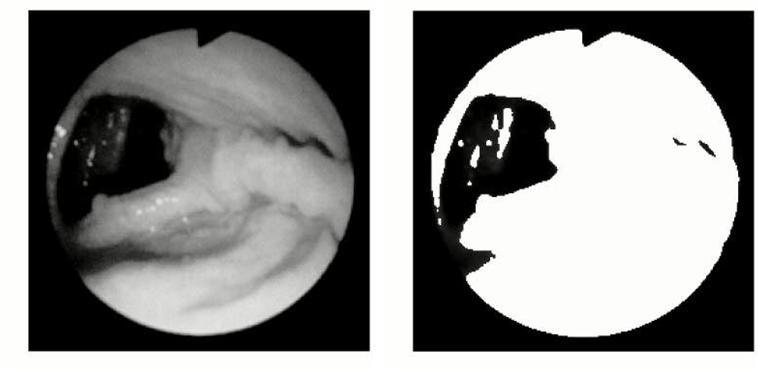
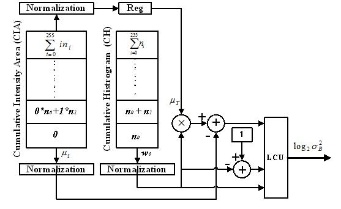

Our Projects


Motivation
In an endoscopic procedure, endoscope is navigated in the colon along the direction of the lumen to facilitate observation of the internal disorders of the gastrointestinal tract. Identification and segmentation of lumen region is therefore essential. High speed realization of the segmentation algorithm resulting in accurate extraction of the lumen region is required to facilitate online robotic auto diagnosis and navigation in an endoscopic surgery procedure.
Most image processing algorithms are based on software approaches running on microcomputers with huge memories. While these processors are conveniently available, they are often not fast enough for truly demanding real-time processing tasks. As real-time processing is critical in the automatic guidance of micro-robot in endoscopic procedures, there is a need for developing high performance dedicated embedded processing modules.
Research Objective
This research aims to develop a low cost accelerator for automatic segmentation of the lumen region and boundary from endoscopic images accurately in real time.
Low-Cost and High-Speed Architecture for Between-Class Variance Computation of APT
The Adaptive Progressive Thresholding (APT) method can be used for the real-time segmentation of lumen region in grey level endoscopic images. It is an iterative procedure in which only the object pixels with intensity lower than the current threshold is selected to facilitate further segmentation in the subsequent iteration.

We have designed a novel architecture for the between-class variance computations of APT to facilitate rapid lumen region detection of endoscopic images. Binary logarithm conversion techniques are employed to minimise the otherwise severe bottleneck within the iterative loop. A minimal look-up table (LUT) is employed in the logarithm conversion as the required content can be computed on the fly from the available LUT contents. In addition, the computation unit consists of only simple adders and shifters. One distinct advantage of our approach is that it allows for the desired accuracy of the between-class variance computations to be manipulated dynamically based on application requirements. Comparisons with the existing architecture show that the proposed architecture is superior both in terms of area and time.

Publications
International Refereed Journals
- C.S. Lim, S.K. Lam, T. Srikanthan and H. Tian, “High Speed Segmentation of Endoscopic Images for Micro-Robotic Auto Navigation", International Journal of Humanoid Robotics, Vol. 3, No. 4, December 2006, pp. 523-545 [PDF]
- H. Tian, S.K. Lam and T. Srikanthan, “Area-Time Efficient Between-Class Variance Module for Adaptive Segmentation Process", IEE Proceedings on Vision, Image and Signal Processing, Vol. 150, No. 4, August 2003, pp. 263-269
- Pon Nidhya Elango and Siew-Kei Lam, “Bounded Iterative Thresholding for Lumen Region Detection in Endoscopic Images”, 14th International Conference on Control, Automation, Robotics and Vision (ICARV), November 2016 [PDF]
- Tian H., S.K. Lam and Srikanthan T., “Implementing Otsu’s Thresholding Process Using Area-Time Efficient Logarithmic Approximation Unit”, IEEE International Symposium on Circuits and Systems (ISCAS), Vol. 4, May 2003, pp. 21-24
- Tian H., S.K. Lam, Srikanthan T. and Chang C.H., “An Efficient Architecture for Adaptive Progressive Thresholding”, IEEE Asia-Pacific Conference on Circuits and Systems (APCCAS), Vol. 1, October 2002, pp. 513-516 [PDF]
- Tian H., Srikanthan T., Asari K.V. and S.K. Lam, “Study on the Effect of Object to Camera Distance on Polynomial Expansion Coefficients in Barrel Distortion Correction”, IEEE Proceedings of the 5th Southwest Symposium on Image Analysis and Interpretation (SSIAI), April 2002 [PDF]